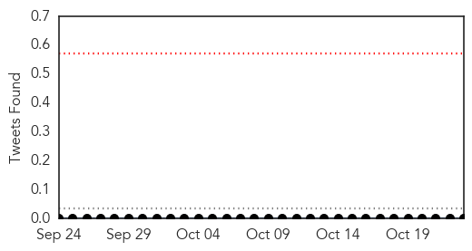
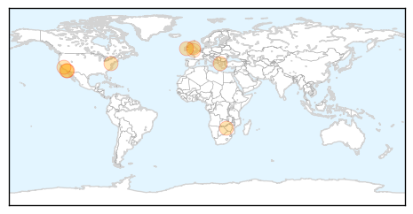
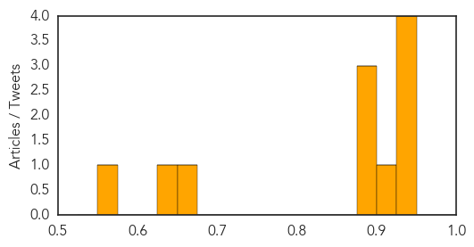
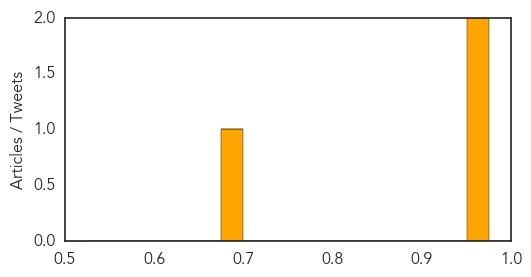

Meningitis
30-Day Web Trend
1 alerts, 3 warnings
30-Day Twitter Trend
0 alerts, 0 warnings

Article Locations
Article Confidences
Top Articles:
- 0.944
- Wales must still be alert to the dangers of meningitis despite a substantial drop in cases, a leading consultant has warned
- 0.936
- SDSU Student Dies from Meningitis Infection
- 0.933
- Meningitis vaccinations call by Public Health Wales
- 0.926
- Viral Meningitis Cases at University of Maryland
- 0.913
- Beating the virus: Task shifting puts HIV patients in good hands
- 0.898
- Palomar College Student Hospitalized With Meningococcal Bacteria
- 0.883
- Multiple cases of meningitis reported at U-Md.
- 0.882
- University of Maryland Confirms Meningitis Cases
- 0.669
- Stroud meningitis charity urges Government to fast track vaccine to stop childhood suffering
- 0.637
- Palomar student contracted meningococcal bacteria
- 0.565
- The Daily Nexus
Top Tweets:
-
No tweets found for Oct 23, 2014
West Nile Virus
30-Day Web Trend
0 alerts, 0 warnings
30-Day Twitter Trend
2 alerts, 0 warnings

Article Locations
Article Confidences
Top Articles:
Top Tweets:
-
No tweets found for Oct 23, 2014